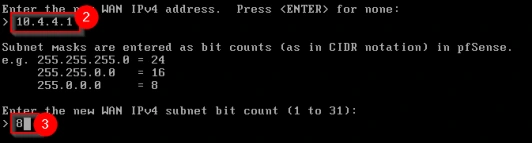
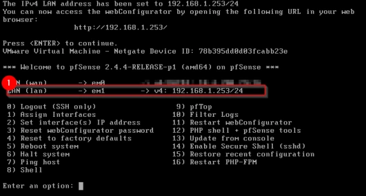
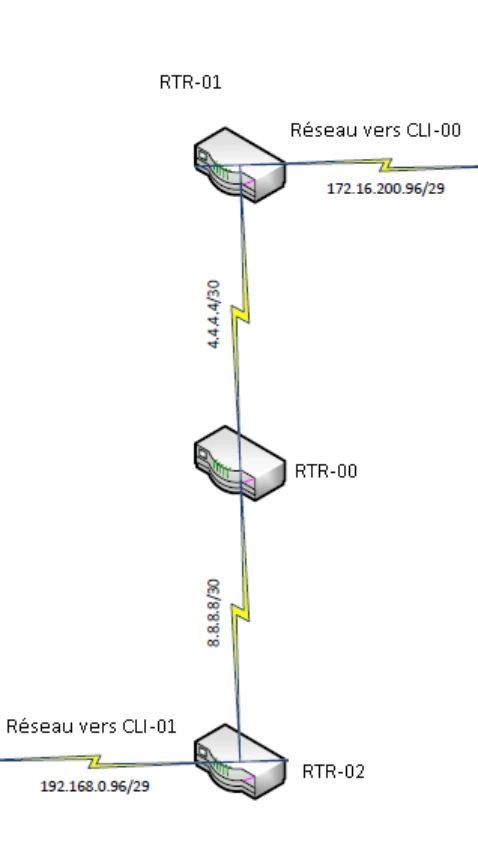
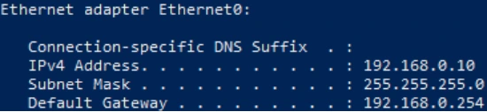
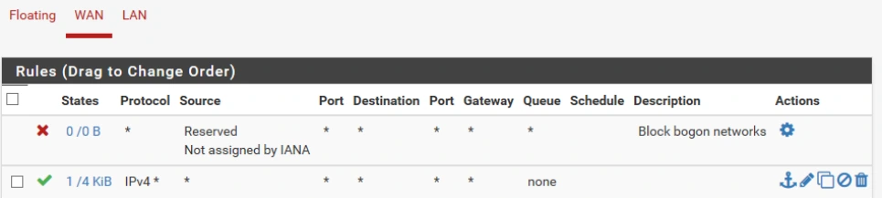
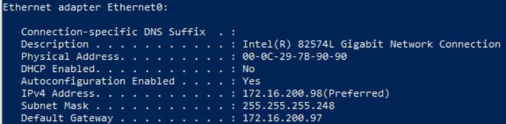
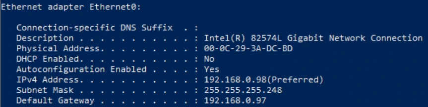

Module 04 — Le routage¶
La transcription du support Drive et l’aide pédagogique sont séparées pour rendre leur provenance explicite.
SOURCE DRIVE · TRANSCRIPTION DU SUPPORT
Le contenu des documents du dossier TSSR est transcrit ci-dessous, page par page. Les textes et tableaux sont intégrés à la page Web. Aucun fichier PDF, aucune diapositive entière ni aucune reproduction de page n’est affiché. Seuls des croquis ou visuels isolés et vérifiés peuvent accompagner la transcription. Les versions et les consignes restent celles des supports de formation. Les compléments IA sont conservés dans leur onglet distinct.
Support · Module 04 – Support de cours · 8 pages transcrites
Module 04 – Le routage
Objectifs
- Comprendre et configurer le routage
Concept du routage
Le mécanisme du routage
- Il permet la communication entre différents réseaux logiques.
- Les types de routage :
- Statique
- Dynamique
- Constitution d’une route :
- Adresse de réseau de destination
- Masque de sous-réseau du réseau de destination
- Adresse de passerelle
Concept du routage
Communication au sein d’un même réseau logique
- Si ping de A vers B
Poste A Poste B
Ping 1A vers 1B
Domaine de diffusion
Réseau identique
Envoi de la requête ping
@MAC : Phy1B @IP : 1B
@MAC : Phy1A @IP : 1A
Poste C
Poste A Poste B
- Si ping de A vers C
Domaine de diffusion
Ping 1A vers 2C
Réseau différent
@MAC : Phy1A @IP : 1A
@MAC : Phy1B @IP : 1B
@MAC : Phy2C @IP : 2C
Pas d’envoi de requête ping
Concept du routage
Communication au sein d’un même réseau logique
192.168.1.20 192.168.1.10
Poste B
Retour erreur ICMP
FF:FF:FF:FF:FF:FF 00:29:0C:1E:30:1A
Poste A
Ping 192.168.1.20
Arp B
Ping 127.0.0.1
Non
Requête ARP @mac B ?
00:29:0C:1E:30:1B 192.168.1.20/24
Oui
Réponse
Adresse locale ?
00:29:0C:1E:30:1A 192.168.1.10/24
Oui
ARP ?
Mise en attente du ping
Non
192.168.1.20 192.168.1.10
Non
00:29:0C:1E:30:1B 00:29:0C:1E:30:1A
Réponse Arp B
Table ARP
Calcul de réseau logique A @IPA : 192.168.1.10 Mask A : 255.255.255.0 Réseau A : 192.168.1.0
Oui Mise à jour
@IP = @MAC ? Oui
table ARP
Adresse
Calcul de réseau logique B
192.168.1.20 192.168.1.10
réseau identique ?
00:29:0C:1E:30:1B 00:29:0C:1E:30:1A
Ping B
Non
Retour erreur ICMP ou Utilisation GW si renseignée
pour A @IPB : 192.168.1.20 Mask A : 255.255.255.0 Réseau A : 192.168.1.0
Envoi du ping vers Poste B
Concept du routage
Communication au sein de réseaux logiques différents
Poste A
Poste D
1R 2R
Domaine de diffusion 1 Domaine de diffusion 2
Poste C
@MAC : Phy2D @IP : 2D
Poste B @MAC : Phy1A @IP : 1A @GW : 1R
@MAC : Phy2R @IP : 2R
@MAC : Phy1R @IP : 1R
@MAC : Phy1B @IP : 1B
@MAC : Phy2C @IP : 2C
- Si ping de A vers D Ping 1A vers 2D
Réponse du routeur
Réponse de D
MacD MacS IPD IPS DATA
MacD MacS IPD IPS DATA
Réseau différent Envoi de la requête ping si passerelle par défaut configurée
Phy1A Phy1R 1A 1R Réponse ARP
Phy2R Phy2D 2R 2D Réponse ARP
Recherche de l’adresse de physique de R
Recherche de l’adresse physique de D
Adresse physique Adresse logique
Adresse physique Adresse logique
Destinataire Source Destinataire Source
Envoie de la trame Ping à D
Envoie de la trame Ping au routeur
Destinataire Source Destinataire Source
FF:FF:FF:FF:FF:FF Phy1A 1R 1A Requête ARP
FF:FF:FF:FF:FF:FF Phy2R 2D 2R Requête ARP
MacD MacS IPD IPS DATA
MacD MacS IPD IPS DATA
Phy2D Phy2R 2D 1A Ping D
Phy1R Phy1A 2D 1A Ping D
Le routage
Concept du routage
Communication au sein d’un même réseau logique
192.168.1.20 192.168.1.10 Poste B
Poste A Ping 192.168.1.20 FF:FF:FF:FF:FF:FF 00:29:0C:1E:30:1A Retour erreur ICMP
Arp B
Ping 127.0.0.1 Non
00:29:0C:1E:30:1B
00:29:0C:1E:30:1A Adresse Oui Requête ARP @mac B ? 192.168.1.20/24
192.168.1.10/24 locale ? Réponse Oui Mise en attente du ping ARP ?
Non 192.168.1.20 192.168.1.10
Non 00:29:0C:1E:30:1B 00:29:0C:1E:30:1A Calcul de réseau logique A
@IPA : 192.168.1.10 Réponse Arp B
Mask A : 255.255.255.0 Table ARP
Réseau A : 192.168.1.0 Oui @IP = Oui Mise à jour @MAC ? table ARP
Adresse
Calcul de réseau logique B réseau 192.168.1.20 192.168.1.10
pour A identique ? 00:29:0C:1E:30:1B 00:29:0C:1E:30:1A
@IPB : 192.168.1.20
Mask A : 255.255.255.0 Non Retour erreur ICMP ou Ping B
Réseau A : 192.168.1.0 Utilisation GW si renseignée
Envoi du ping vers Poste B
5
5
Le routage
Concept du routage
Communication au sein de réseaux logiques différents
Poste A 1R 2R Poste D
Domaine de diffusion 1 Domaine de diffusion 2
@MAC : Phy1A @MAC : Phy2D
@IP : 1A Poste B Poste C @IP : 2D
@GW : 1R
@MAC : Phy1R @MAC : Phy2R
• Si ping de A vers D @MAC : Phy1B @IP : 1R @IP : 2R @MAC : Phy2C
Ping 1A vers 2D @IP : 1B @IP : 2C
RéponseRéponse dude Drouteur Réseau différent
Envoi de la requête ping si passerelle par défaut configurée MacDMacD MacSMacS IPDIPD IPSIPS DATADATA
RechercheRecherchededel’adressel’adressedephysiquephysiquededeDR Phy2RPhy1A Phy2DPhy1R 2R1A 2D 1R RéponseRéponseARPARP
AdresseAdresse physiquephysique AdresseAdresse logiquelogique
DestinataireDestinataire SourceSource DestinataireDestinataire SourceSource EnvoieEnvoie dede lala trametrame PingPing àauDrouteur
FF:FF:FF:FF:FF:FFFF:FF:FF:FF:FF:FF Phy1APhy2R 1R2D 1A2R RequêteRequêteARPARP MacDMacD MacSMacS IPDIPD IPSIPS DATADATA
Phy2DPhy1R Phy2RPhy1A 2D2D 1A1A PingPingDD
6
6Concept du routage
Communication au sein de réseaux logiques différents
192.168.1.254 192.168.1.10
Poste D
Retour erreur ICMP
FF:FF:FF:FF:FF:FF 00:29:0C:1E:30:1A
Poste A
Ping 192.168.2.140
Arp R
Non
Ping 127.0.0.1
Requête ARP @mac gw ?
MAC 00:29:0C:1E:30:2D IPv4 192.168.2.140/26 GW 192.168.2.254
Oui
Réponse
Adresse locale ?
Oui
MAC 00:29:0C:1E:30:1A IPv4 192.168.1.10/24 GW 192.168.1.254
ARP ?
Mise en attente du ping
Non
192.168.1.254 192.168.1.10
Non
00:29:0C:1E:30:1R 00:29:0C:1E:30:1A
Réponse Arp B
Table ARP
Calcul de réseau logique A @IPA : 192.168.1.10 Mask A : 255.255.255.0 Réseau A : 192.168.1.0
Oui Mise à jour
@IP = @MAC ? Oui
table ARP
Adresse
Calcul de réseau logique D
192.168.2.140 192.168.1.10
réseau identique ?
00:29:0C:1E:30:1R 00:29:0C:1E:30:1A
Adresse
Ping D
Oui
Non
GW ?
pour A @IPD : 192.168.2.140 Mask A : 255.255.255.0 Réseau A : 192.168.2.0
Envoi du ping vers le routeur
Calcul adresse réseau de la GW pour A
Retour erreur ICMP
Non
Concept du routage
Communication au sein de réseaux logiques différents
Poste D
192.168.2.140 192.168.1.10
00:29:0C:1E:30:1R 00:29:0C:1E:30:1A
Réponse
Non Poste A
ARP ? 192.168.2.140 192.168.2.254
Ping D
FF:FF:FF:FF:FF:FF 00:29:0C:1E:30:2R
Requête ARP D
MAC 00:29:0C:1E:30:2D IPv4192.168.2.140/26 GW 192.168.2.254
Retour erreur ICMP
Oui Routeur reçoit le ping
MAC 00:29:0C:1E:30:1A IPv4 192.168.1.10/24 GW 192.168.1.254
Requête ARP
192.168.2.140 192.168.2.254
Désencapsulation jusqu’à la couche 3
@MAC D ?
Mise à jour
00:29:0C:1E:30:2D 00:29:0C:1E:30:2R
Table ARP
Réponse ARP D
Mise en attente du ping
Non
Réseau présent table de routage ?
Réencapsulation couche 2
Non
Oui
Retour
192.168.2.140 192.168.1.10
erreur
Oui
Table ARP @IP = @MAC ?
00:29:0C:1E:30:2D 00:29:0C:1E:30:2R
Réseau
Oui
ICMP
local ?
Ping D
Envoi du ping au
Non
routeur suivant
Envoi du ping au poste D
Concept du routage
Principe de fonctionnement du routage
À chaque saut
Le routeur vérifie les informations de transfert dans la table de routage.
Est traité de manière indépendante dans chaque routeur le long du chemin.
Le routeur examine l’adresse IP de destination pour chaque paquet.
Chaque paquet
Est vérifié
Concept de la traduction d’adresse
La traduction d’adresse : sans NAT
Internet
80.87.128.67
90.83.78.224
192.168.20.0 /24
192.168.20.13
192.168.20.254
Source : 80.87.128.67:80
Source : 192.168.20.13:3008
Destination : 192.168.20.13:3008
Destination : 80.87.128.67:80
Concept de la traduction d’adresse
La traduction d’adresse : avec NAT
Source : 90.83.78.224:49010
Source : 192.168.20.13:3008
Destination : 80.87.128.67:80
Destination : 80.87.128.67:80
Internet 80.87.128.67
192.168.20.0 /24
192.168.20.254 90.83.78.224
192.168.20.13
Source : 80.87.128.67:80
Source : 80.87.128.67:80
Destination : 192.168.20.13:3008
Destination : 90.83.78.224 : 49010
Démonstration
Le routeur et la traduction d'adresses
TP
Le réseau global
TP
Conclusion
- Vous comprenez et savez configurer le routage
Référence du document : 1Lkf-lTyovca0i4z_9kGhD7T32aIPlqYD · SHA-256 eaf504284cca02e3…
Démonstration · Fiche démo 1 - Démarrage et configuration initiale du pare-feu · 6 pages transcrites
Démarrage et configuration initiale du pare-feu
Démonstration 01 du module 04
Cette démonstration décrit les différentes étapes d’installation du pare-feu sous pfSense
Déroulement
- Prérequis
Disposer d’un fichier .iso pfSense disponible sous Distrib ou sur https://www.pfSense.org/download/
Disposer d’une machine virtuelle avec une carte réseau VmNet10.
- Création de la machine virtuelle
Créer une nouvelle machine virtuelle avec les prérequis suivants :
- 2 CPU
- 20 Go de disque
- 2 interfaces
- 1 en mode bridge
- 1 en mode VmNet10
La création de la machine virtuelle se fera de la même manière que lors des démonstrations précédentes.
- Configuration du pfSense
Au premier lancement de la machine virtuelle, l’utilitaire d’installation se lance. Appuyer sur la touche [Entrée]. Appuyer de nouveau sur la touche [Entrée]. Sélectionner le clavier français, puis appuyer sur la touche [Entrée]. Appuyer sur la touche [Entrée] pour valider le choix du clavier. Appuyer sur la touche [Entrée] afin de valider la configuration des disques. Appuyer sur la touche [Entrée] afin de finaliser le processus d’installation. Enfin, appuyer sur la touche [Entrée] afin de procéder au redémarrage de la machine virtuelle.
Étapes illustrées dans le support
- Accepter l’écran d’accueil et choisir Install pfSense.
- Sélectionner la disposition de clavier French et continuer avec cette disposition.
- Dans le partitionnement, sélectionner Auto (UFS). Une fois l’installation terminée, choisir No lorsque l’installateur propose une intervention manuelle, puis Reboot.
- Configuration des interfaces réseau
Lors du démarrage de la machine virtuelle, cet écran apparaît (1). Pour assigner des interfaces (indiquer à la machine virtuelle quelle est l’interface bridgée par exemple), appuyer sur la touche [ 1 ], puis appuyer sur la touche [Entrée]. Appuyer sur la touche [ n ], puis appuyer sur la touche [Entrée] pour indiquer qu’il n’y a pas de VLANs à configurer. Indiquer le nom de l’interface WAN (bridge), ici « em0 » puis appuyer sur la touche [Entrée]. Indiquer le nom de l’interface LAN (VmNet10), ici « em1 » puis appuyer sur la touche [Entrée]. Enfin appuyer sur les touches [ y ] et [Entrée] pour indiquer que la configuration des interfaces est bonne.
- Configuration des adresses IP des cartes réseau
Pour configurer les adresses réseau des cartes sur la machine virtuelle, appuyer sur la touche [ 2 ], puis appuyer sur la touche [Entrée]. Indiquer le nom de l’interface puis appuyer sur la touche [Entrée] (1). La configuration ne se fera pas en DHCP (ici), appuyer sur [ n ] puis sur la touche [Entrée]. Indiquer l’adresse IP à affecter à l’interface (2) ainsi que le masque en notation CIDR (3), puis appuyer sur la touche [Entrée]. Appuyer sur la touche [Entrée]. Appuyer de nouveau sur la touche [Entrée]. Appuyer sur la touche [ n ] puis sur [Entrée]
N. B. la méthodologie sera utilisée pour la configuration de la carte LAN em1.


- Accès à la console web du routeur
L’accès au portail web se fait via l’adresse IP configurée précédemment (adresse de l’interface LAN).
Dans cet exemple, l’adresse IP utilisée est 192.168.1.253. L’adresse est trouvable sur la page d’accueil du pfSense (1) ou lors de la configuration de l’interface LAN (2).
Sur le client, ouvrir un navigateur puis indiquer dans la barre URL l’adresse IP du routeur (3). Lors de la première connexion, les informations sont les suivantes :
- Username : admin
- Password : [valeur fournie par le formateur]
Cliquer sur le bouton Next (4). Cliquer sur le bouton Next (5). Indiquer le nom du routeur dans la combo-box Hostname (6) puis cliquer sur le bouton Next (7). Indiquer un nom de serveur NTP (8) ainsi que la bonne région pour la timezone (9), puis cliquer sur le bouton Next (10). Décocher la checkbox Block private networks from entering via WAN (11) puis cliquer sur le bouton Next (12). Cliquer sur le bouton Next (13). Indiquer un nouveau mot de passe pour se connecter à la console (14), puis cliquer sur le bouton Next (15). Enfin, cliquer sur le bouton Reload (16) pour finaliser la configuration.


Étapes illustrées dans le support
- Dans le Wizard / pfSense Setup, avancer depuis l’accueil puis l’écran de support.
- Renseigner le nom de l’équipement. La capture montre Routeur, le serveur de temps 0.pfsense.pool.ntp.org et le fuseau Europe/Paris.
- Configurer les réseaux privés sur le WAN selon le scénario, puis le LAN 192.168.1.253/24 dans l’exemple.
- Saisir le secret d’administration fourni par le formateur, confirmer, puis recharger la configuration.
Référence du document : 1L1EB41e5KJUatgu-qTdXIb3Lrwd04YwA · SHA-256 bb9666eb5aa6576d…
Énoncé · Enoncé du TP 1 - Le routeur · 2 pages transcrites
Services réseau en environnement Microsoft Le routeur
TP du Module 04 – Le routage
Avant de démarrer ce TP, il convient d’avoir suivi les vidéos du module 4.
Durée estimée
30 minutes à 1 heure
Énoncé
Prérequis :
Déployer la machine virtuelle CLI-01-TP8-OK.
Identifiant : AdminFormation - Mot de passe : [valeur fournie par le formateur]
Déployer la machine virtuelle RTR-01-TP8-OK sur VMware Workstation.
Identifiant : admin - Mot de passe : [valeur fournie par le formateur]
Création des VMs.
Une VM Windows 10 nommée CLI-00 qui fera office de poste client. Une VM routeur pfSense nommée RTR-00.
Connectivité :
Configurer le poste client CLI-00.
- Carte réseau : VMNET10 o Adresse IP : 192.168.0.10/24.
Configurer le routeur RTR-00.
- 1ère carte réseau : Bridge. o Adresse IP : utiliser l’adressage dynamique. o 2ème carte réseau : Bridge. o Utiliser l’adresse IP 172.16.0.1/16
- 3ème carte réseau : VMNET10 o Adresse IP : utiliser la dernière adresse d’hôte du réseau privé défini précédemment.
Vérifier la connectivité des machines :
- Du poste CLI-00 vers le routeur RTR-00. o Du routeur RTR-01 vers le routeur RTR-00. o Du poste CLI-00 vers le poste CLI-01.
Routes
Indiquer ci-dessous les opérations que vous avez réalisées sur votre routeur pfSense :
Documentation
· Vous réaliserez un schéma et reporterez les paramètres IP de chacun de vos postes.
Référence du document : 1t36yZff121s2gllEm0ZicfkoHq7LlwYp · SHA-256 f1bf4f5795d2038d…
Énoncé · Enoncé du TP 2 - Le réseau global · 2 pages transcrites
Le réseau global
TP du Module 04 – Le routage
Avant de démarrer ce TP, il convient d’avoir suivi les vidéos du module 4 et réalisé le TP précédent.
Durée estimée
1 à 2 heures
Énoncé
Prérequis :
- Avoir réalisé le TP précédent du Module 04.
Création des VM.
- Deux VM Windows 10 nommées CLI-00 et CLI-01 qui feront office de postes clients.
- Trois VM routeurs pfSense nommée RTR-00, RTR-01, RTR-02. Connectivité :
- Configurer le poste client CLI-00.
- Carte réseau : BRIDGE o Adresse IP : Utiliser la deuxième IP disponible du réseau. • Configurer le poste client CLI-01.
- Carte réseau : BRIDGE o Adresse IP : Utiliser la deuxième IP disponible du réseau.
- Configurer le routeur RTR-00.
- 1ère carte réseau : Bridge o Adresse IP : utiliser la première adresse du réseau. o 2ème carte réseau : Bridge o Adresse IP : utiliser la première adresse du réseau.
- Configurer le routeur RTR-01.
- 1ère carte réseau : Bridge o Adresse IP : utiliser la dernière adresse du réseau. o 2ème carte réseau : Bridge o Adresse IP : utiliser la première adresse du réseau. o • Configurer le routeur RTR-02.
- 1ère carte réseau : Bridge o Adresse IP : utiliser la dernière adresse du réseau.
- 2ème carte réseau : Bridge o Adresse IP : utiliser la première adresse du réseau.
- Vérifiez la connectivité des machines : Finalisation
- L’ensemble des routeurs et des clients doivent pouvoir communiquer entre eux.
- Votre routeur devra contenir le moins possible de routes dans sa table de routage.


Référence du document : 1OJJ97Sz9nvYft-F7uvEB4B9yKQ3neEIO · SHA-256 3f5c564d1e30e3ff…
Correction · Solution du TP 1 - Le routeur · 5 pages transcrites
Correction originale : à consulter après avoir tenté l’exercice.
Le routeur
TP du Module 04 – Le routage
Avant de démarrer ce TP, il convient d’avoir suivi les vidéos du module 4.
Durée estimée
30 minutes à 1 heure
Solution
Prérequis :
- Déployer la machine Virtuelle CLI-01-TP8-OK.
- Identifiant : AdminFormation - Mot de passe : [valeur fournie par le formateur]
- Déployer la machine virtuelle RTR-01-TP8-OK sur VMware Workstation.
- Identifiant : admin - Mot de passe : [valeur fournie par le formateur]
Création des VM
- Une VM Windows 10 nommée CLI-00 qui fera office de poste client.
- Une VM routeur pfSense nommée RTR-00. Connectivité
- Configurer le poste client CLI-00.
- Carte réseau : VMnet 10 o Adresse IP : 192.168.0.10/24.
- Configurer le routeur RTR-00.
- 1ère carte réseau : Bridge. o Adresse IP : utiliser l’adressage dynamique. o 2ème carte réseau : Bridge. o Utiliser l’adresse IP 172.16.0.1/16 o 3ème carte réseau : VMNET10


- Adresse IP : utiliser la dernière adresse d’hôte du réseau privé défini
précédemment.
- Vérifier la connectivité des machines :
- Du poste CLI-00 vers le routeur RTR-00.
- Du routeur RTR-01 vers le routeur RTR-00
- Du poste CLI-00 vers le poste CLI-01.
Routes
- Indiquer ci-dessous les opérations que vous avez réalisées sur votre routeur PfSense :
- Mise en place d’une adresse IP fixe sur l’interface WAN du PfSense (la même adresse que celle obtenue via le DHCP). 2. Mise en place d’une adresse IP fixe sur l’interface LAN. 3. Connexion sur l’interface web PfSense depuis le client Windows 10 (NB : par défaut le login est admin et le mot de passe [secret fourni par le formateur]). 4. Désactivation du « Block private networks and loopback adresses » pour les interfaces WAN et LAN :
- Suppression des règles superflues :
- Suppression et création de la gateway adéquate (par où vous souhaitez passer pour atteindre le réseau cible).


- Création de la route vers le réseau distant en passant par la Gateway créée
Référence du document : 1axGCw8rH_pOhvp2hwm7XrZFZ5qoQuzZ9 · SHA-256 c8a1e2b4838b6efd…
Correction · Solution du TP 2 - Le réseau global · 4 pages transcrites
Correction originale : à consulter après avoir tenté l’exercice.
Le réseau global
TP du Module 04 – Le routage
Avant de démarrer ce TP, il convient d’avoir suivi les vidéos du module 4 et réalisé le TP précédent.
Durée estimée
1 à 2 heures
Énoncé
Prérequis :
- Avoir réalisé le TP précédent du Module 04.
Création des VM
- Deux VM Windows 10 nommées CLI-00 et CLI-01 qui feront office de postes clients.
- Trois VM routeur pfSense nommée RTR-00, RTR-01, RTR-02. Connectivité :
- Configurer le poste client CLI-00.
- Carte réseau : BRIDGE o Adresse IP : Utiliser la deuxième IP disponible du réseau.
- Configurer le poste client CLI-01.
- Carte réseau : BRIDGE o Adresse IP : utiliser la deuxième IP disponible du réseau.


- Configurer le routeur RTR-00.
- 1ère carte réseau : Bridge o Adresse IP : utiliser la première adresse du réseau. o 2ème carte réseau : Bridge o Adresse IP : utiliser la première adresse du réseau.
- Configurer le routeur RTR-01.
- 1ère carte réseau : Bridge o Adresse IP : utiliser la dernière adresse du réseau. o 2ème carte réseau : Bridge o Adresse IP : utiliser la première adresse du réseau.


- Configurer le routeur RTR-02.
- 1ère carte réseau : Bridge o Adresse IP : utiliser la dernière adresse du réseau. o 2ème carte réseau : Bridge o Adresse IP : utiliser la première adresse du réseau.
- Vérifiez la connectivité des machines : Finalisation
- L’ensemble des routeurs et des clients doivent pouvoir communiquer entre eux.
- Votre routeur devra contenir le moins possible de routes dans sa table de routage.
Réseau de destination Masque réseau de destination Adresse de tronçon suivant 172.16.200.96 255.255.255.248 4.4.4.6 192.168.0.96 255.255.255.248 8.8.8.10 RTR-02
| Routeur | Réseau de destination | Masque réseau de destination | Adresse de tronçon suivant |
|---|---|---|---|
| RTR-01 | 0.0.0.0 | 0.0.0.0 | 4.4.4.5 |
| RTR-00 | 172.16.200.96 | 255.255.255.248 | 4.4.4.6 |
| RTR-00 | 192.168.0.96 | 255.255.255.248 | 8.8.8.10 |
| RTR-02 | 0.0.0.0 | 0.0.0.0 | 8.8.8.9 |
Référence du document : 1FkCgJhAYvUBrLoybg9VA_pEu99k6VfEC · SHA-256 addeb42624169770…
Complément IA / externe au cours — fiche pédagogique du portail
Cette fiche contient une reformulation et des aides d’apprentissage rédigées par IA. Elle est distincte de la transcription des documents du Drive et ne la remplace pas. Les schémas de synthèse de cette fiche sont des illustrations IA / externes au cours, sauf les captures explicitement attribuées à un document source.
Une route donne un réseau de destination, un masque et un prochain saut. Le routeur prend une décision pour chaque paquet. Les routes peuvent être configurées statiquement ou apprises dynamiquement. Le TP utilise des routes statiques et des routeurs pfSense.
Décider si la destination est locale¶
Avec 192.168.1.10/24 et 192.168.1.20/24, les postes appartiennent à 192.168.1.0/24. Si nécessaire, le premier diffuse une requête ARP pour apprendre la MAC du second. Il envoie alors le paquet à cette MAC. Si la destination est distante, le poste cherche la MAC de sa passerelle et lui remet la trame. L’adresse IP de destination reste celle de l’hôte distant.
À chaque saut, le routeur lit la destination IP, choisit la route, puis prépare une nouvelle trame sur son interface de sortie. Il recherche par ARP l’hôte directement connecté ou le routeur suivant. Le chemin retour doit fonctionner lui aussi. Un ping perdu peut venir d’une route manquante, d’un filtre ou d’une réponse impossible.
Le support associe 192.168.2.140/26 à la passerelle 192.168.2.254. Ce poste appartient à 192.168.2.128/26, dont les hôtes vont de .129 à .190. Une passerelle comme .190 serait joignable sur ce sous-réseau si elle était configurée sur le routeur. Vérifier l’adresse et le masque ensemble. Les MAC terminées par 1R ou 2R sont des symboles du schéma. Une MAC réelle s’écrit en hexadécimal.
Distinguer routage, NAT et filtrage¶
Le routage choisit où envoyer le paquet. Le filtrage autorise ou refuse le passage. La traduction d’adresse et de port modifie les valeurs exposées sur une interface. Dans l’exemple du support, 192.168.20.13:3008 contacte 80.87.128.67:80. Le routeur traduit la source en 90.83.78.224:49010, puis utilise son état pour remettre la réponse à 192.168.20.13:3008. Les IP publiques du schéma sont des valeurs historiques d’illustration.
Relier les réseaux du TP¶
Dans le TP 1, CLI-00 utilise VMNet10 avec 192.168.0.10/24. RTR-00 reçoit une adresse dynamique sur une carte bridge, 172.16.0.1/16 sur une autre et 192.168.0.254/24 sur VMNet10. Les VM fournies CLI-01-TP8-OK et RTR-01-TP8-OK complètent la topologie. Tester client → routeur, routeur → routeur puis client → client, et documenter les routes, interfaces et règles utilisées.
Le TP 2 relie trois routeurs. Le corrigé utilise 172.16.200.96/29 côté CLI-00 et 192.168.0.96/29 côté CLI-01. Les liaisons entre routeurs sont 4.4.4.4/30 et 8.8.8.8/30. Reproduire ces adresses uniquement dans l’environnement de formation où elles sont prévues. Les « première » et « dernière » adresses d’un réseau désignent ici les adresses d’hôte utilisables.
| Routeur | Préfixe de destination | Prochain saut |
|---|---|---|
| RTR-01 | 0.0.0.0/0 |
4.4.4.5 |
| RTR-00 | 172.16.200.96/29 |
4.4.4.6 |
| RTR-00 | 192.168.0.96/29 |
8.8.8.10 |
| RTR-02 | 0.0.0.0/0 |
8.8.8.9 |
Les réseaux directement connectés figurent déjà dans la table. Les deux routeurs de bord peuvent avoir une route par défaut vers RTR-00. RTR-00 a besoin de connaître les deux réseaux distants. La correction demande de réduire les routes ajoutées tout en conservant la communication entre tous les hôtes.
Contrôler d’abord le lien, l’adresse, le masque et la passerelle. Examiner ensuite la route vers le réseau distant, le prochain saut et les règles pfSense. Comparer les résultats des deux sens du trajet. Les captures d’installation montrent les options console et l’assistant Web dans la version historique du TP. Employer les paramètres réels de chaque VM.
Mini-quiz¶
- Quelle MAC le client utilise-t-il pour joindre un réseau distant ?
- Pourquoi
.254est-elle inadaptée à192.168.2.140/26? - Quelle différence entre une route et une règle de filtrage ?
Réponses
- La MAC de sa passerelle sur le réseau local.
- Elle appartient à un autre sous-réseau que
.140/26. - La route indique le chemin. La règle décide si le trafic peut l’emprunter.
Appliquer le cours¶
M04 — Le routage
20 questions
Teste tes connaissances sur ce module.